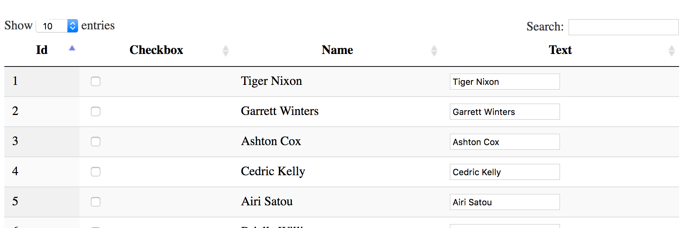
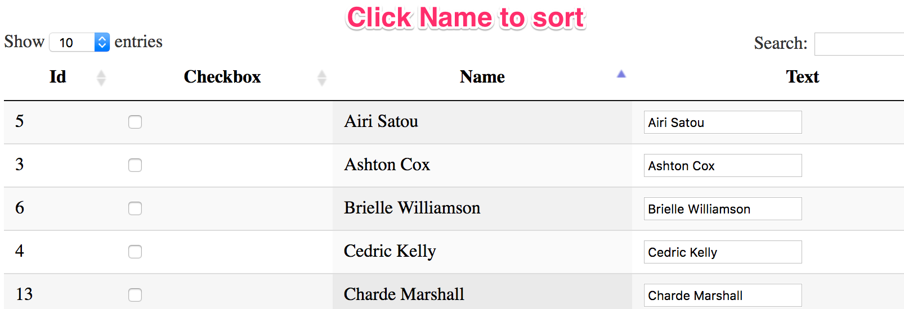
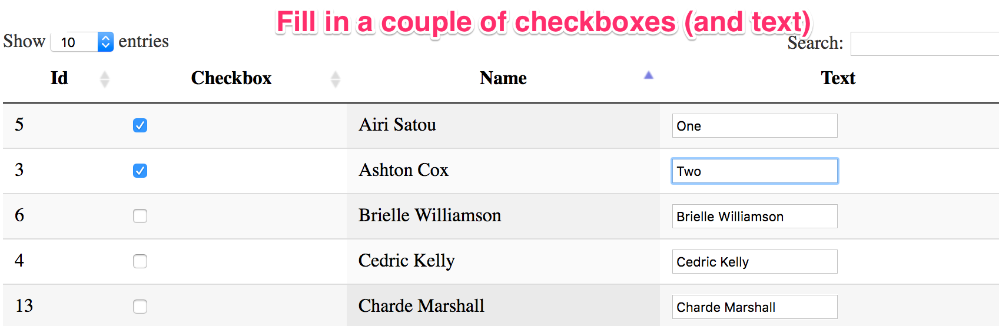
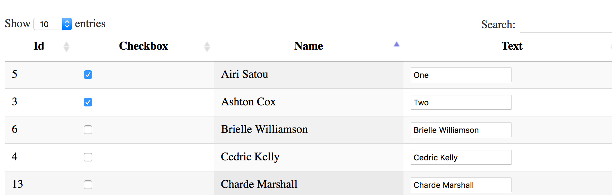
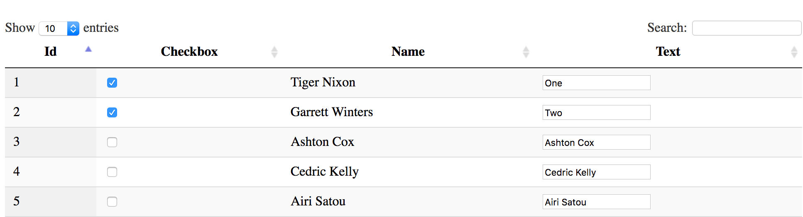

Problem case: PAGE 1
Example
- View table on page 2.

- Sort the list by name.

- Select top two checkboxes and adjust text.

- Click link to go to meaningless page 3
- Click browser back button
- Expected outcome (in Firefox)

- Problematic outcome in Chrome/Safari

Workaround: use autocomplete="off"
View table on page 4.
- Sort the list by name.
- Select top two checkboxes and adjust text.
- Click link to go to meaningless page 3
- Click browser back button